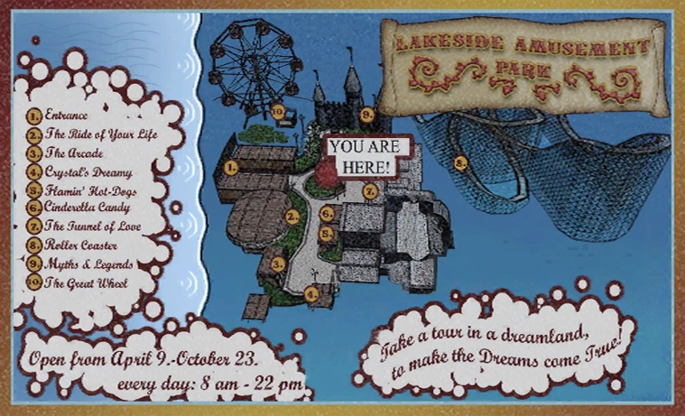
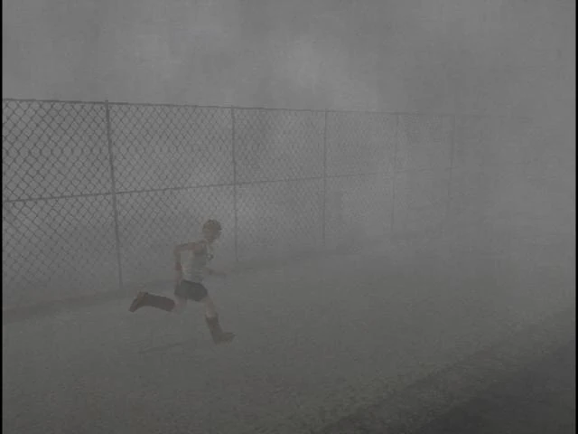

NEWS
Strange Sightings in Silent Hill
Residents report seeing mysterious figures and hearing eerie noises throughout the town. The local authorities are investigating, but no conclusive evidence has been found. More ...
Disappearance of Heather Mason
Teenager Heather Mason has been reported missing. Last seen near the Central Shopping Center, authorities urge anyone with information to come forward. More ...

Unexplained Phenomena in Lakeside Amusement Park
Visitors to the Lakeside Amusement Park have reported strange occurrences, including unusual sounds and sightings of ghostly figures. Experts are baffled by these phenomena. More ...

Mysterious Fog in Silent Hill
A thick, eerie fog has enveloped the town, reducing visibility and creating an unsettling atmosphere. Some residents claim the fog has a supernatural origin. More ...
Abandoned Hospital Reports
There have been multiple reports of strange noises and sightings within the abandoned Brookhaven Hospital. Local authorities are hesitant to investigate due to the building's eerie history. More ...